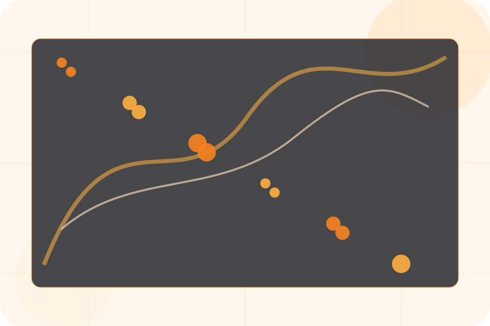
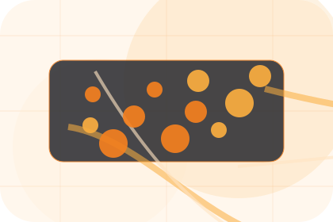
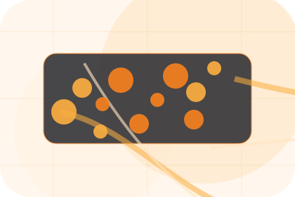
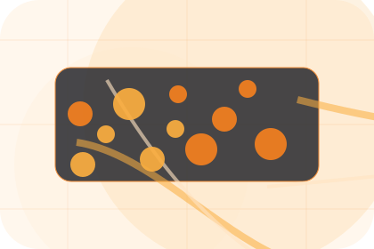
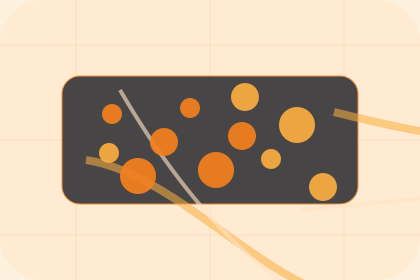

Context
Story gives the page a specific angle instead of repeating the navigation label.
Company / 01
Company opens as a clear technology decision hub: what Nexus offers, who it helps, why it matters, and which route to take first.
The first screen combines positioning, proof, primary action, and fast internal navigation, so people can act immediately or compare the rest of the company route with context.
Network diagram hero
Select the closest route and Nexus keeps the next step, proof, and follow-up expectation aligned with uptime and operational control.

Company / 02
Story adds technical context to the company route, using the edge network product system structure to support uptime and operational control before visitors choose a next step.
Nexus uses network service tiles and focused copy to make the decision easier to scan, aligning the section with uptime and operational control rather than filling space.
Explore CompanyStory gives the page a specific angle instead of repeating the navigation label.
The network service tiles show what to compare, what to avoid, and what matters most for technology, it services & digital infrastructure visitors.
The final cue points to a useful internal route so the section keeps the journey moving.
Company / 03
Expertise adds technical context to the company route, using the edge network product system structure to support uptime and operational control before visitors choose a next step.
Nexus uses network service tiles and focused copy to make the decision easier to scan, aligning the section with uptime and operational control rather than filling space.
Explore Company

Expertise gives the page a specific angle instead of repeating the navigation label.
Company / 04
Team introduces the people, roles, or specialist credibility behind Nexus so the decision feels less anonymous.
The copy ties names, roles, credentials, or availability back to the decision on the page instead of treating profiles as decorative biographies.
Explore CompanyThe person, team, or specialist function connected to team is easy to understand.
Credentials, responsibilities, or availability are tied to the visitor's decision, not listed for decoration.
The section explains how to move from profile interest to a practical conversation or booking path.
Company / 05
Standards gives the proof layer for company: standards, evidence, and reassurance that make the next decision feel grounded.
Instead of relying on vague claims, Nexus presents visible standards, process cues, and proof artifacts that help technology visitors judge fit.
Explore CompanyVisible proof that helps visitors believe the claims behind standards.
The quality, safety, or operating expectation this section makes explicit.
What becomes clearer before someone decides whether to request an IT audit.
Company / 06
Tools adds technical context to the company route, using the edge network product system structure to support uptime and operational control before visitors choose a next step.
Nexus uses network service tiles and focused copy to make the decision easier to scan, aligning the section with uptime and operational control rather than filling space.
Explore CompanyNexus structures tools around context, judgment, and a clear next route so visitors can compare the block quickly before they request an IT audit.
Request IT AuditCompany / 08
Values adds technical context to the company route, using the edge network product system structure to support uptime and operational control before visitors choose a next step.
Nexus uses network service tiles and focused copy to make the decision easier to scan, aligning the section with uptime and operational control rather than filling space.
Explore CompanyValues gives the page a specific angle instead of repeating the navigation label.
The network service tiles show what to compare, what to avoid, and what matters most for technology, it services & digital infrastructure visitors.

The final cue points to a useful internal route so the section keeps the journey moving.
Company / 09
Trust gives the proof layer for company: standards, evidence, and reassurance that make the next decision feel grounded.
Instead of relying on vague claims, Nexus presents visible standards, process cues, and proof artifacts that help technology visitors judge fit.
Explore CompanyVisible proof that helps visitors believe the claims behind trust.
The quality, safety, or operating expectation this section makes explicit.
What becomes clearer before someone decides whether to request an IT audit.
Company / 10
Nexus closes the company route with a clear action, a quick reminder of the value, and a low-friction way to request an IT audit.
Visitors who are ready can use the primary action. Visitors who are still comparing can scan the section links, proof, and support routes before they request an IT audit.
Request IT AuditThe final block keeps the choice simple: act now, compare one more proof route, or send enough detail for a focused response.
Request IT Audituptime and operational control
A network-first IT site with technical proof, orange action paths, product cards, and status-aware conversion. Company ends with a direct path to request an IT audit, plus enough context for visitors who still need to compare.

Request IT AuditInformation is provided for planning and should be reviewed for the final client, location, and operating rules.